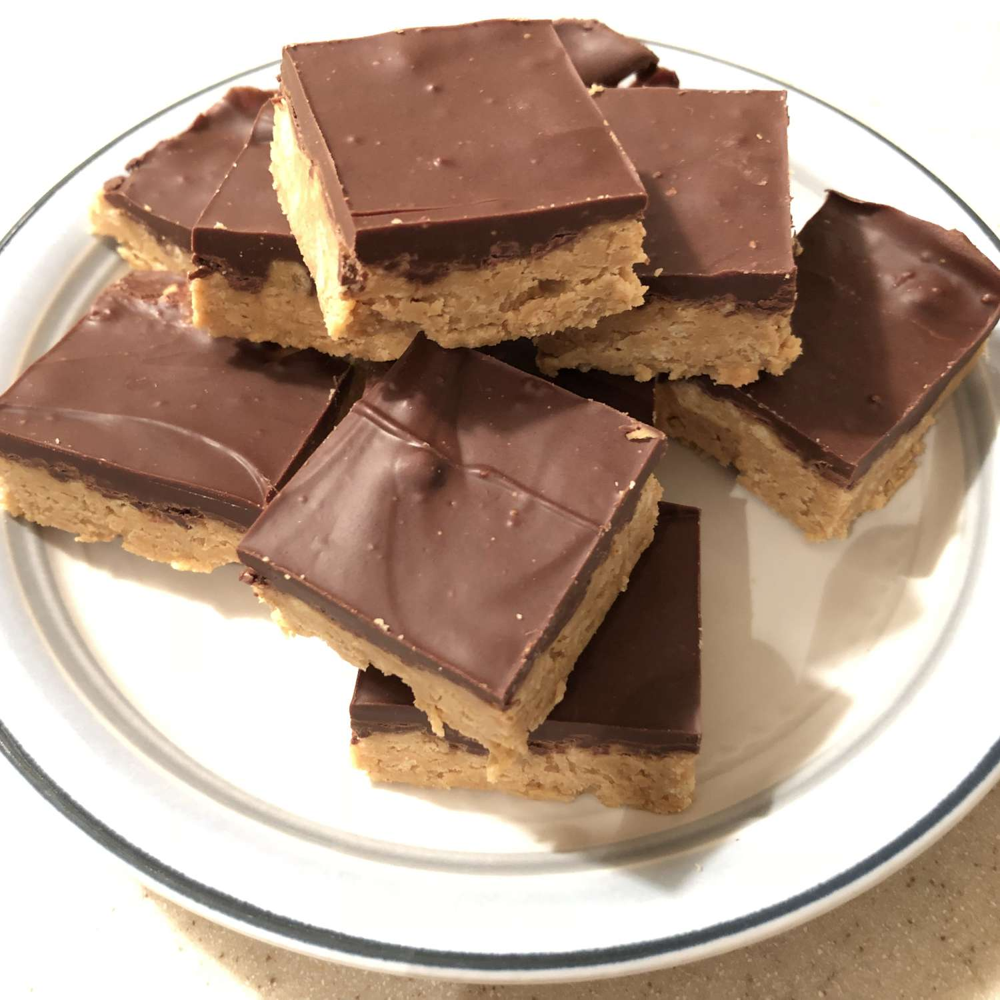

Peanut Butter Bars

Description
Peanut butter bars are a delicious treat for people of all ages! While simple,
the peanut butter bar is a staple in my personal life.
I love peanut butter bars.
Ingredients
- 2 cups graham cracker crumbs
- 2 cups confectioners' sugar
- 1 cup butter or margarine
- 1 cup peanut butter
- 1 1/2 cups semisweet chocolate chips
- 4 tablespoons peanut butter
Steps
- Mix together graham cracker crumbs, confectioners' sugar, butter or margarine, and 1 cup peanut butter in a medium bowl until well-blended. Press evenly into the bottom of an ungreased 9x13-inch pan.
- Place chocolate chips and 4 tablespoons peanut butter in a microwave-safe bowl. Microwave on high, stirring every 15 seconds, until smooth. Spread mixture over crust.
- Refrigerate for at least 1 hour before cutting into 12 squares.